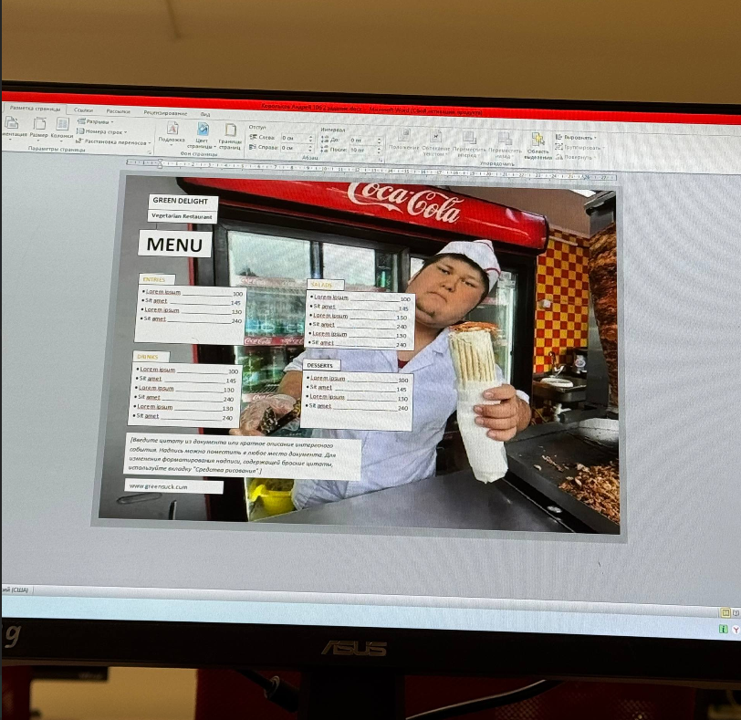
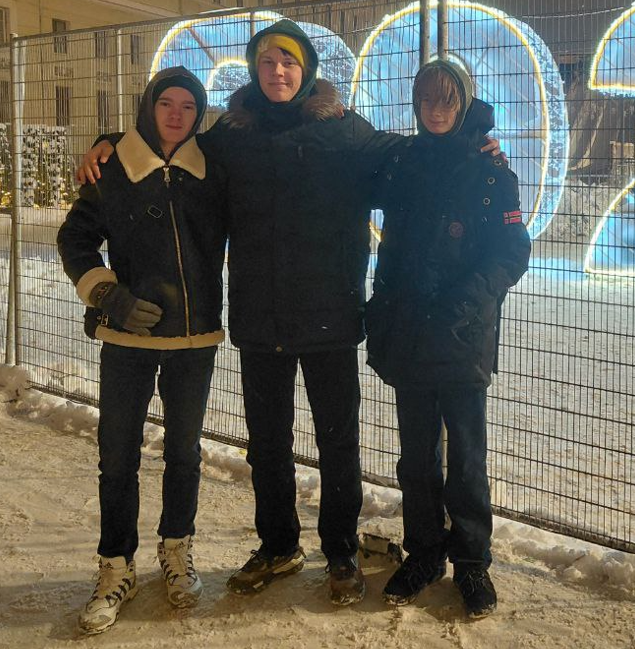
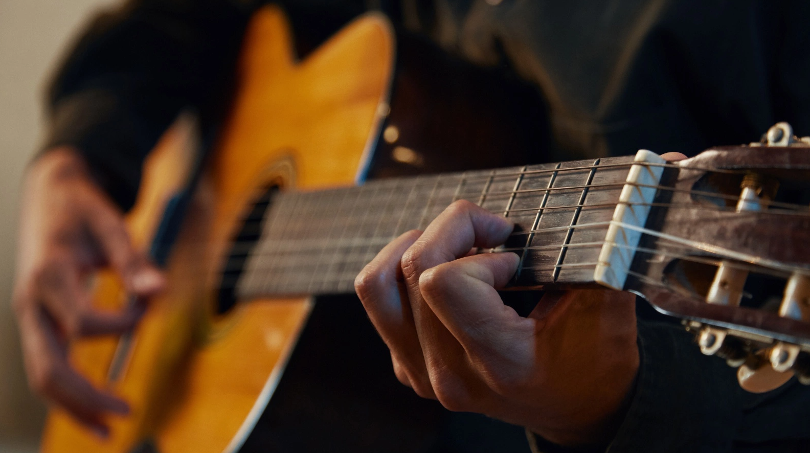
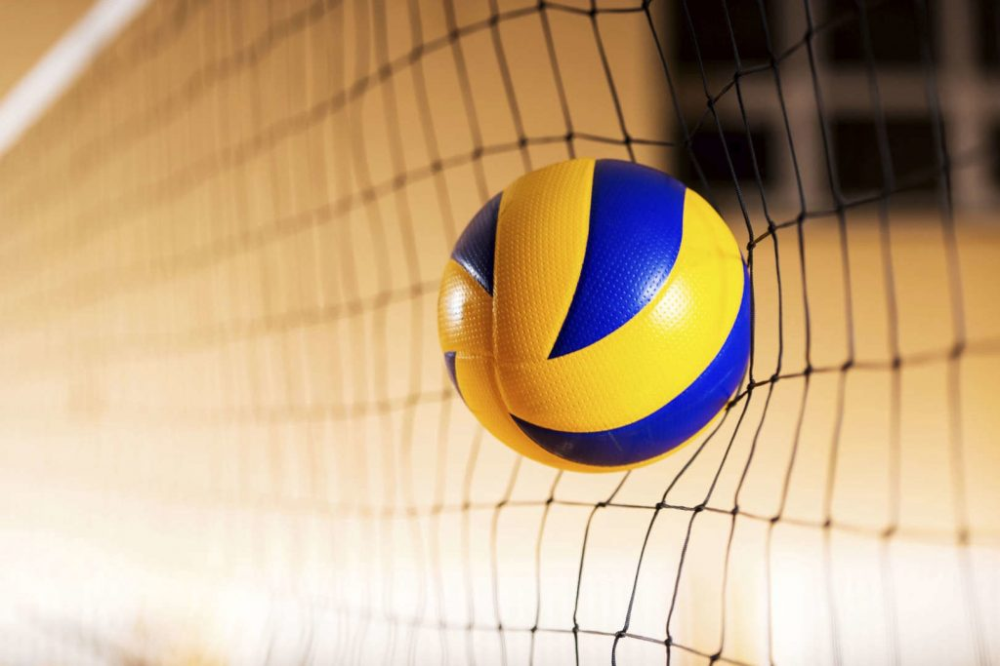
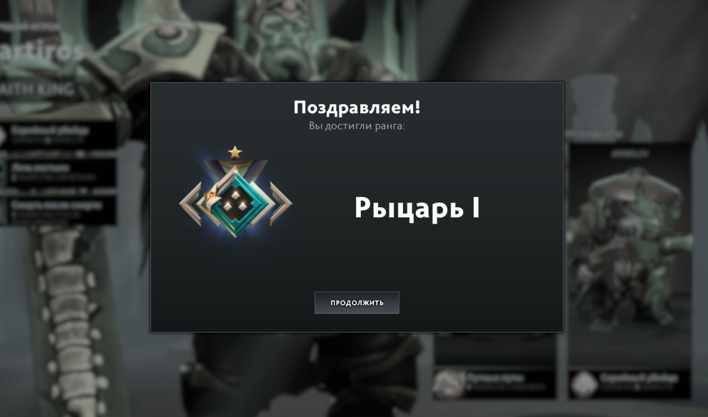
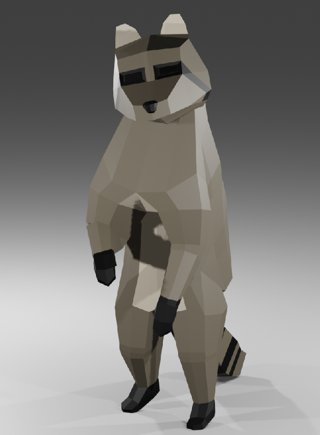
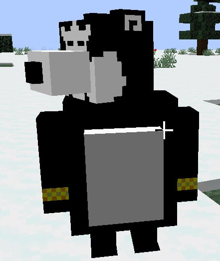

Учусь в 10 классе в Санкт-Петербурге. Хочу стать инженером-конструктором,
но мне также нравится работать за компьютером и создавать 3D-модели.
Мне нравится создавать 3D-модели и продумывать устройства на этапе проектирования. В будущем хочу разрабатывать технически сложные объекты.

Свободное время часто провожу за монитором — моделирую в Blender и Blockbench, изучаю новое или просто отдыхаю за играми.

Легко нахожу общий язык с людьми, люблю работать в команде. Считаю, что в любом деле важны хорошие отношения и взаимопомощь.

Играю на гитаре — это помогает расслабиться и отвлечься от учёбы. Люблю как акустику, так и электрогитару.

Активно играю в волейбол. Спорт учит быстро принимать решения и работать в команде — это пригодится в любой профессии.

В свободное время люблю поиграть. Это не только отдых, но и развитие реакции, тактического мышления.

Осваиваю Blender — создаю простые 3D-модели, разбираюсь с основами полигонального моделирования и материалов.

Умею работать в Blockbench — делаю низкополигональные модели в стиле Minecraft. Это интересный опыт в создании игровых объектов.
📧 stepavarankin@mail.ru
🌐 Telegram: @Frukticus